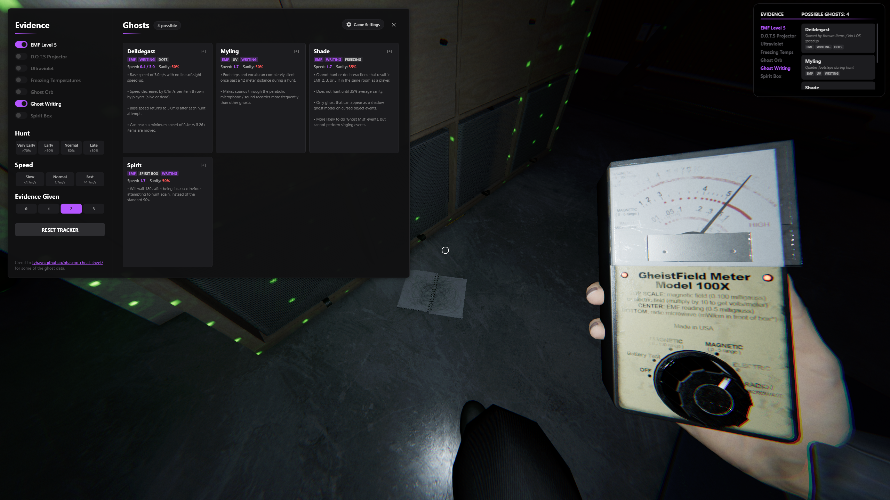
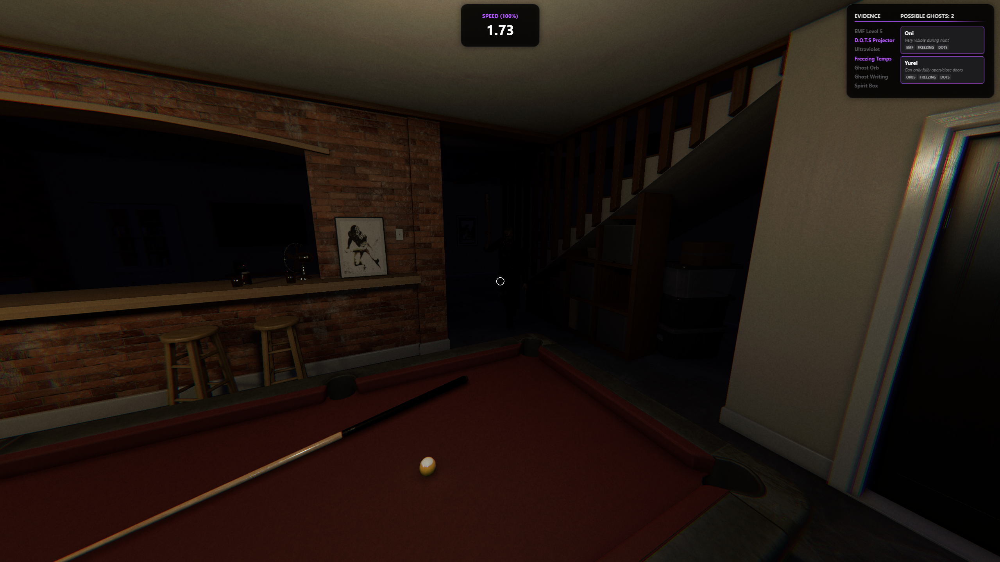
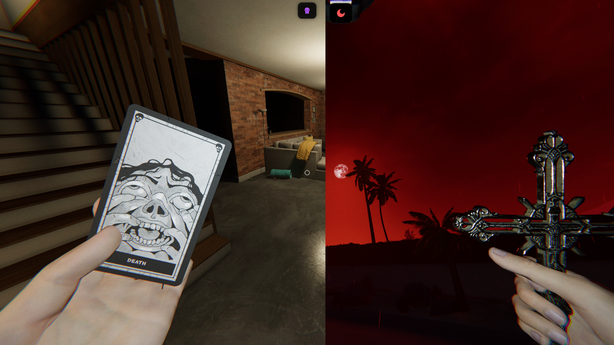

Hunt, Cooldown & Smudge Timers
Track ghost hunts, cooldowns & smudge timers as they happen.
PhasOverlay allows you to track hunt durations, cooldowns & smudge timers all in one place. It also features a robust evidence tracker. It allows you to read into ghost behaviour, mark evidence as it comes in, listen to ghost speeds & rule out ghosts.
Track ghost hunts, cooldowns & smudge timers as they happen.

Track evidence as it's discovered, read about ghost behaviours & tap to ghosts footsteps to narrow down the list.

Tap in rhythm with the ghost's footsteps to calculate its speed & narrow down the ghost list instantly.

Trigger blood moon to automatically adust ghost speed calculation, or trigger the cursed hunt modifier when you trigger a cursed hunt to adjust hunt durations.
Change the placement of the UI, adjust the scale & opacity to your liking, adjust what modules you want enabled & adjust how loud the sounds are.
Weekly challenge presets that are updated weekly, so you can play the weekly without having to dig through the settings for it.
Change any hotkey to your liking, defaults to F1 - F7 for timer functions.
Listen to what the ghosts footsteps sound like to help identify them, or listen to a ghosts LOS speeduup curve.
How to install PhasOverlay
Extract it anywhere on your drive. No fixed install location required.
Launch PhasOverlay.exe.
Configure the overlay to your liking and go make GHD proud!
Windows may show a SmartScreen warning the first time you run PhasOverlay. This is due
to the .exe not being signed. Click "More Info" >
"Run Anyway". This is normal for unsigned applications.
PhasOverlay is open-source. You're able to verify that PhasOverlay is completely safe yourself, as the full source code is on GitHub: PhasOverlay and PhasOverlay-Data.
Requires Windows 10 or 11, 64-bit.